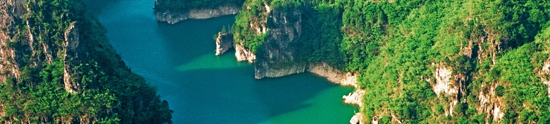

蟒河
蟒河，亦称漭河、莽河，黄河支流沁河的支流。发源于山西省晋城市阳城县南指住山麓花野岭，由北向南，流经晋城市阳城县、河南省济源市、孟州市，分为两支，再经温县、武陟县，在武陟县分别入黄河和沁河。 全长130公里（一说106公里）， 流域面积1328平方公里。山西境内水利效益较好，建设有引沁济蟒灌区。河南省境内历史上灾害较多，建国后采取流域综合治理措施，河流治理效果明显。山西阳城县源头区开发有风景区。
在山西省境内，蟒河发源于晋城市阳城县南指住山麓花野岭，流经桑林镇拐庄东南入河南省境。山西省境内长19公里，河床宽约5～10米。发源于大溶洞，相传洞中曾有巨蟒，故名。在蟒河源头有蟒河泉，位于晋城市阳城县南桑林镇蟒河自然风景区内。由东西两泉组成，相会于蟒河风景区的中心地带黄龙庙前。二泉以东泉为最，泉水清澈晶莹，在蟒河风景区形成出水口、水帘洞、大瀑布三大景观。在济源市内，在亚桥乡有济河汇入。自西向东穿越济源市区，在市区南赵礼庄以上有南蟒河（湨河）汇入，东南流经白墙水库入孟州市境。